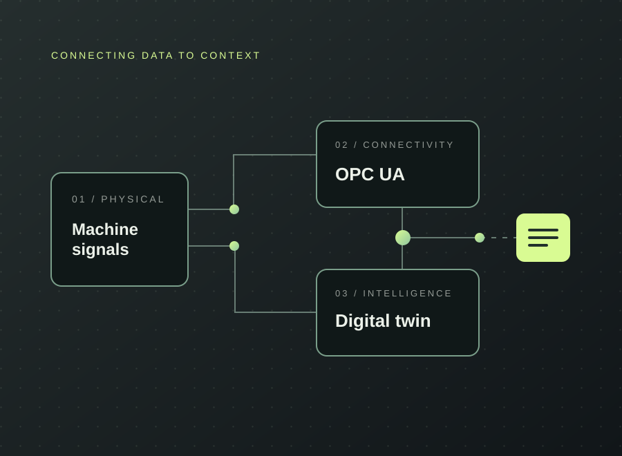

INDUSTRIAL CONNECTIVITY / SYSTEM VIEWIndustrial digital twin integration
Making machine and sensor data useful, accessible, and connected.
An industrial data-integration architecture bringing OPC UA machine signals and external sensors into an Asset Administration Shell, with persistent storage and live monitoring.
Explore case study